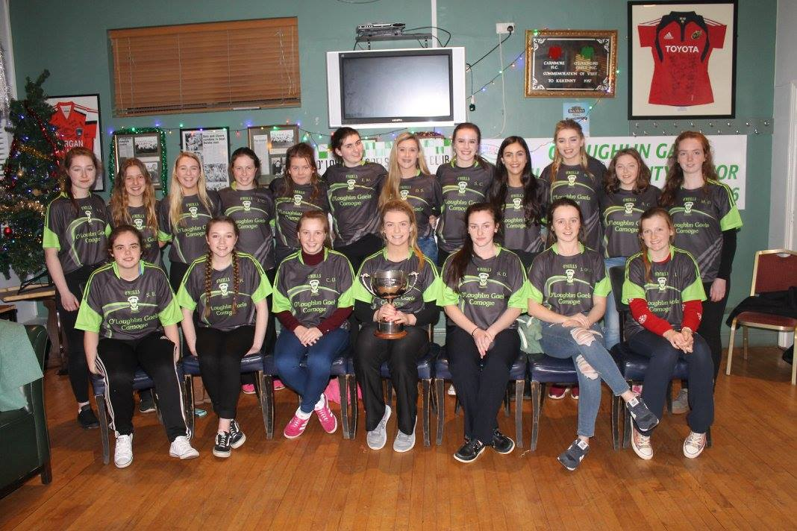

I have had a keen interest in soccer all my life, watching my Dad and two older brothers playing. Also supporting Liverpool with them spending endless weekends on the couch watching matches. I began playing in primary school at lunch time with my classmates. I then joined my local soccer club Evergreen. I continued to play all through my 6 years of secondary school. I continue to play with Evergreen's Womens 7-a-side team.
Camogie was never my strongest sport despite growing up in Kilkenny. I began playing with my local club O'Loughlin Gaels in Kilkenny when i was 12. I then took up camogie in 4th year in school. While playing with the school i have attained 3 Leinster medals and 2 All-Ireland medals. I have played with the Kilkenny u17 County Development Squad last year where we won the All-Ireland in Dublin. I continue to play with my home club and I also play with the UCC Senior B Camogie team.
Despite growing up in Kilkenny football has been a keen factor in my life growing up. In primary school football was equally as encouraged as football. A town club, Kilkenny City, was set up to join all of the surrounding clubs due to the lack of numbers. We went on to win Division 4, Division 3 and Division 2 of the All-Ireland Feile Championships. I also played in various competitions with the county team. I continue to play with the UCC Senior B football team.
I was a member of my home club Kilkenny City Harriers. I used to take part in various cross-country events and also in track and field where i used to compete in the 800m and also relay events. I have endless leinster and all-ireland medals in my collection. Unfortunately growing up meant more responsibilities and less time for activites so i no longer continue to compete in athletics. In my free-time i like to go running to keep fit.